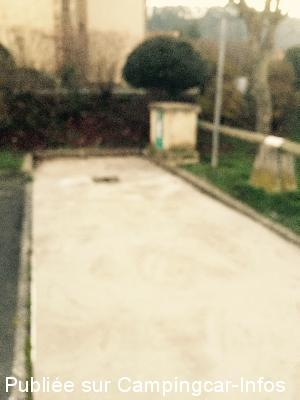
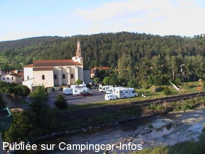

ASN = Aire de services avec stationnement nuit possible de :
COUBON
(N° 717)
Accès/adresse :
Route du Plan d'Eau
Parking de l'Église
43700 COUBON
Parking de l'Église
43700 COUBON
Latitude : (Nord) 44.99731° Décimaux ou 44° 59′ 50′′
Longitude : (Est) 3.91716° Décimaux ou 3° 55′ 1′′
Tarif : 2015
Stationnement gratuit
Services : 3 €
Jetons au tabac
Services :


Aire de pique-nique
Poubelles
Jeux
Autres informations :
Pas de services en période hivernale
Parking à partager avec des voitures.

Le 23/12/2014 par Snoopy

Le 04/06/2006 par p.guillaumot
de
Bruno M
le 12/05/2015 :
Bof, nous cherchions un coin pour passer la nuit. Parking en contrebas d'un pont très passager, et un parking envahi par les voitures, aucune place réservée pour les CC.
Pas du tout ce que je recherche pour faire une halte nocturne...
Bof, nous cherchions un coin pour passer la nuit. Parking en contrebas d'un pont très passager, et un parking envahi par les voitures, aucune place réservée pour les CC.
Pas du tout ce que je recherche pour faire une halte nocturne...
de
GUYTOU44
le 29/07/2014 :
de passage juillet 2014 nous étions 5 CC
calme et très agréable sur les bords de la Loire
les commerçants sont très sympas
pas testé l'aire de vidange et de remplissage il semblerait qu'il faut demander la clé aux commerces
adjacents .
de passage juillet 2014 nous étions 5 CC
calme et très agréable sur les bords de la Loire
les commerçants sont très sympas
pas testé l'aire de vidange et de remplissage il semblerait qu'il faut demander la clé aux commerces
adjacents .
de
Géanne
le 10/05/2014 :
cadre agréable en bord de Loire à proximité des commerces.
Aire de service HS il faut aller se ravitailler au camping.
cadre agréable en bord de Loire à proximité des commerces.
Aire de service HS il faut aller se ravitailler au camping.
de
Ocral J
le 14/09/2011 :
le 22/08/2011 je confirme les dires des autres campingcaristes,le cout est de 2.55€ mais il faut posser un chèque en caution (de 15 €) car on nous prête une clef qu'il faut aller chercher soit à la boucherie,à la boulangerie ou à la suprette Vivial, il faut donc être présent aux heures d'ouverture de ces commerces.
Si les voitures sont stationnées trop proche il est impossible d'accéder à l'aire de services.
Le matin le réveil est pour 7 heures car les voitures viennent occuper le parking.
le 22/08/2011 je confirme les dires des autres campingcaristes,le cout est de 2.55€ mais il faut posser un chèque en caution (de 15 €) car on nous prête une clef qu'il faut aller chercher soit à la boucherie,à la boulangerie ou à la suprette Vivial, il faut donc être présent aux heures d'ouverture de ces commerces.
Si les voitures sont stationnées trop proche il est impossible d'accéder à l'aire de services.
Le matin le réveil est pour 7 heures car les voitures viennent occuper le parking.
de
saclier
le 11/08/2011 :
passé le 8/8/2011 parking au bord de la route ...moyen . vidange impossible si voiture garée sommes allée au camping à coté très bon accueil parking CC à cote du camping prévu pour 2012. ancienne camping-cariste, la propriétaire est à notre écoute.
passé le 8/8/2011 parking au bord de la route ...moyen . vidange impossible si voiture garée sommes allée au camping à coté très bon accueil parking CC à cote du camping prévu pour 2012. ancienne camping-cariste, la propriétaire est à notre écoute.
de
Joussemet Bernard
le 26/07/2011 :
§
Fin juin 2011, le tarifs est de 2,50€ pour les services, il faut aller chercher la clé chez les commerçants voisins j'ai laissé ma carte d'identité en caution (15 € en théorie)
Service et stationnement sont sur le parking automobile, l'accès pour la vidange en est délicat
§
Fin juin 2011, le tarifs est de 2,50€ pour les services, il faut aller chercher la clé chez les commerçants voisins j'ai laissé ma carte d'identité en caution (15 € en théorie)
Service et stationnement sont sur le parking automobile, l'accès pour la vidange en est délicat
de
pat
le 13/05/2011 :
de passage pour la nuit, aire très bien et calme avec toilettes publics et aire de jeux pour les enfants, au bord de la loire.
de passage pour la nuit, aire très bien et calme avec toilettes publics et aire de jeux pour les enfants, au bord de la loire.
de
petugue83
le 01/08/2010 :
Super aire, toujours gratuite. Les services sont gratuits, mais peut-être car une personne " bienveillante " a brisé le cadenas qui fermait le bloc où est le robinet et le tuyau. Super boucherie en face de l'aire, ne vendant que de la viande de production locale (porc, veau, agneau et boeuf) et des lentilles AOC.
Super aire, toujours gratuite. Les services sont gratuits, mais peut-être car une personne " bienveillante " a brisé le cadenas qui fermait le bloc où est le robinet et le tuyau. Super boucherie en face de l'aire, ne vendant que de la viande de production locale (porc, veau, agneau et boeuf) et des lentilles AOC.
de
Stephen Tomlinson
le 02/06/2009 :
Very picturesque! A nice place to stay the night. The bread and fruit shops close by are also very good. The access to the facilities was very difficult because of people parking too close to allow us to get onto the waste dump area. The water was locked away too. But we felt secure and were able to move on next day.
Very picturesque! A nice place to stay the night. The bread and fruit shops close by are also very good. The access to the facilities was very difficult because of people parking too close to allow us to get onto the waste dump area. The water was locked away too. But we felt secure and were able to move on next day.
de
titi03 new cc
le 25/03/2008 :
Lieu agréable sauf le dimanche matin, jour de messe : parking plein de voitures et comme je me pose, je reste. Alors pas contents de nous voir sur le parking. Les WC publics : honteux! Bonjour pour partir en CC. Dommage. A+ sur le site
Lieu agréable sauf le dimanche matin, jour de messe : parking plein de voitures et comme je me pose, je reste. Alors pas contents de nous voir sur le parking. Les WC publics : honteux! Bonjour pour partir en CC. Dommage. A+ sur le site
de
chantal et jean luc
le 06/08/2007 :
Beaucoup de bruit tard le soir avec des voitures très bruyantes et le matin de bonne heure, ce sont les camions qui vous réveillent dès 7 heures en passant sur le pont. Plutôt déçus.
Beaucoup de bruit tard le soir avec des voitures très bruyantes et le matin de bonne heure, ce sont les camions qui vous réveillent dès 7 heures en passant sur le pont. Plutôt déçus.
de
Fam. Hulshof, Nederland
le 19/11/2006 :
We hebben hier op zaterdag 15/10/06 de nacht door gebracht, zullen dit asoluut nooit meer doen. Zij die avond en nacht lastig gevallen door jongeren welke onze camper als doel gebruikte. Ze probeerde op deze manier reactie uit te lokken. Komen hier echt nooit meer.
We hebben hier op zaterdag 15/10/06 de nacht door gebracht, zullen dit asoluut nooit meer doen. Zij die avond en nacht lastig gevallen door jongeren welke onze camper als doel gebruikte. Ze probeerde op deze manier reactie uit te lokken. Komen hier echt nooit meer.
de
ulysse
le 23/08/2006 :
Aire jolie et agréable, facile d'accès, avec des jeux pour les enfants. Par contre, il faut être matinal car les cloches sonnent toutes les demi-heures à partir de 8 H.
Aire jolie et agréable, facile d'accès, avec des jeux pour les enfants. Par contre, il faut être matinal car les cloches sonnent toutes les demi-heures à partir de 8 H.
de
cc48
le 29/05/2006 :
Aire propre, goudronnée et plane aux bords de la Loire. A noter la proximité de jeux pour enfants à deux pas... Nuit très calme. A moins de 10 minutes du Puy en Velay...
Aire propre, goudronnée et plane aux bords de la Loire. A noter la proximité de jeux pour enfants à deux pas... Nuit très calme. A moins de 10 minutes du Puy en Velay...